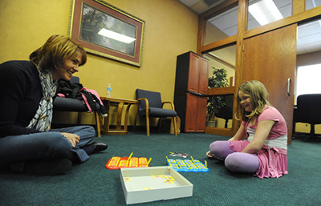

Giving up on an event that’s been running for two decades is hard to do.
But for Big Brothers Big Sisters of the Sioux Empire, it was a $55,000 decision.
The nonprofit group had been hosting Bowl For Kid’s Sake since 1994, but when Executive Director Jami Gates took the helm of the organization in 2013, she realized that the bowling event wasn’t bringing in the cash needed to keep the community- based mentoring programs going.
“Just because it’s a signature event, if it’s not bringing in the dollars we need, we shouldn’t do the event,” Gates said.
The nonprofit scrapped the bowling event in 2013 and instead created a new Kentucky Derby Gala. Donors come dressed up to watch the derby, bid on silent auction items and drink mint juleps.In its first year, the gala raised $65,000, a massive increase from the $10,000 brought in by the last year of the annual bowling event.
It’s a dramatic example, but the results clearly show the need for nonprofits to change and evolve to attract donors.
The number of nonprofits operating in South Dakota has increased 48 percent in the last decade, according to the Secretary of State’s office.
That means there are more organizations vying for dollars, and nonprofits cannot assume that longtime donors will stick with them.
“Just like with any business, you need to keep things fresh and exciting,” Gates said. “If things get kind of stale, donors and supporters may go to other events that may be new to the community.”
To keep things fresh, more nonprofits in the Sioux Falls area are turning to new unique events to attract donors and build relationships with new groups.
Big Brothers Big Sisters launched a new “Over the Edge” campaign, in which people use peer-to-peer fundraising to earn a chance at rappelling over the side of the Raven Industries building downtown.
Feeding South Dakota, a nonprofit fighting hunger in the state, just wrapped up a fundraiser ahead of the rodeo called, “Buck Hunger,” which also included a match donation agreement with Professional Bull Riders.
And Junior Achievement decided to go beyond the traditional golf tournament event this year with a new program aimed at forming relationships with the finance sector.
Kaiser, like Gates, recognized that Junior Achievement had fallen into a pattern of relying on the same events and the same donors year after year.
Junior Achievement, receives 80 percent of its fundraising budget from businesses, unlike many nonprofits who rely most heavily on individual donors.
That means the organization needs to know what businesses want in a partnership with a nonprofit or in sponsoring an event.
And what many businesses want is to be a part of something new.
“Oftentimes if there’s something new that we’re going to try, it might be easier to find a donor to connect to that than it sometimes is to keep even some of your strong corporations funding things that we would say are a vital part of our work,” said Kerri DeGraff, development director for Feeding South Dakota.
For Junior Achievement, that new event is a stock market challenge in which teams compete to get the highest return on a fictitious $1 million investment.
The event lets businesses compete, but it also lets them sponsor teams of high school students, who will participate in an afternoon event on April 6.
While Kaiser said the stock market event was born out of a desire to do something new, it also comes with the recognition that the finance industry did not have much of a relationship with Junior Achievement in Sioux Falls.
More and more, Kaiser said, businesses are looking to align their giving with their core values, and nonprofits are left with the challenge of finding ways to cater donation requests to specific businesses.
“You have to know your donors ... They get approached by everybody," Kaiser said. "So the more you can know about your donor, to me it's a 'Sales 101' thing."
Even outside of the planning for the big events, Kaiser is tailoring day-to-day fundraising efforts to the specific donors she’s hoping to attract.
"We tailor to everybody's needs," she said. "So, if they are in the banking world, we lead with the financial literacy piece of teaching students because that's the piece that really rings home to them."
Similarly, if Kaiser goes to talk with a business owner, she will lead with the opportunity Junior Achievement volunteers have to teach kids about entrepreneurship.
"I really try to go in and make sure I'm speaking their language," Kaiser said.